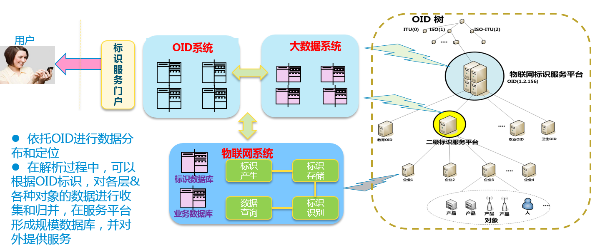
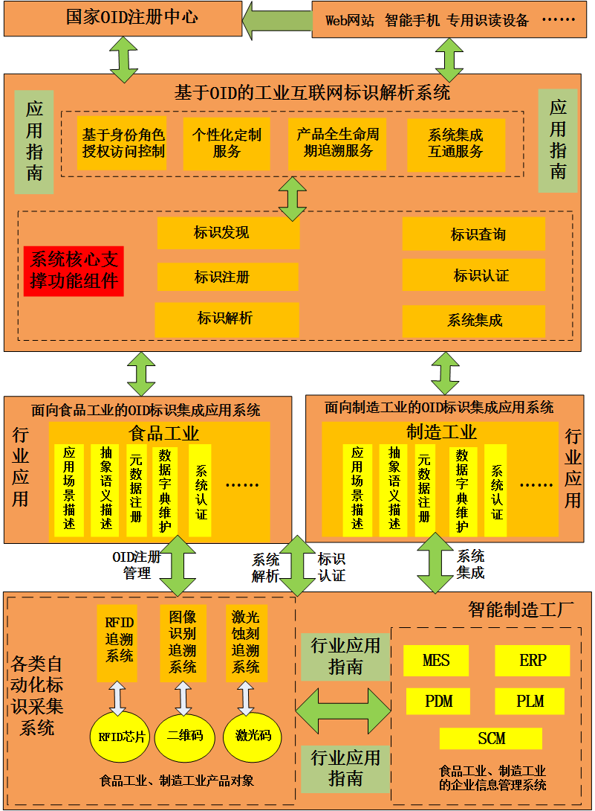
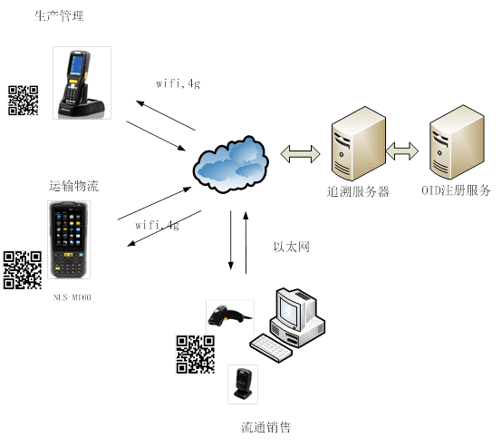
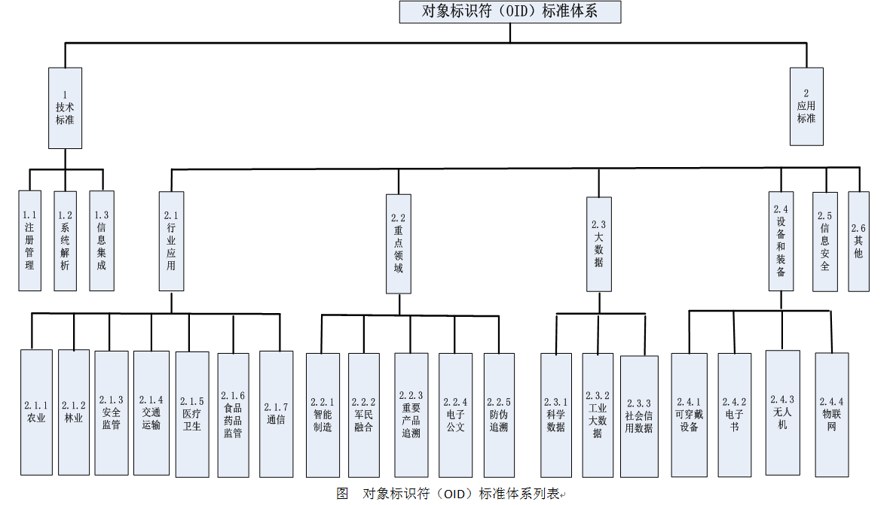

渝ICP备2024033996号
OID
OID（Object Identifier 对象标识符）是由ISO/IEC、ITU共同提出的标识机制， OID标识方案为分层、树状结构，不同层次之间用“.”分隔， 层数无限制。用于对任何类型的对象进行全球无歧义、唯一命名。 国际OID注册管理由ITU-T SG17和ISO/IEC JTC1/SC6共同负责，已在202个国家中采用，各个国家自我管理。 自2006年我国OID注册中心以来，我院投入了大量的人力与物力，初步建立了我国OID标识分配方案和注册管理体系， 研制开发了注册解析系统，研制了30项相关标准，先后为国内164家机关、 企事业单位和社会团体分配了201项顶层的OID标识符， 并为卫生、农业、公安、交通、安监、供销总社及其他多个行业部门提供了领域标准研制、 解析系统开发、标识方案咨询等系列服务。
气象数字对象标识符（Meteorological Digital Object Identifier, MOID）是气象领域用于标识数字对象唯一身份的标识符。在借鉴国家OID注册中心公共服务平台建设经验的基础上，基于全国气象数据开放共享与服务业务情况调研报告，参照工业与信息化部国家OID注册中心有关数字对象标识符建设、运行管理等相关要求，面向气象领域信息管理特点和共享服务需求，构建了气象数据流通交易安全监管平台。 气象数据流通交易安全监管平台利用气象数字资源标识（MOID）技术，完成气象领域国、省、市、县多级数据资源的数据标识与服务标识的注册及管理，实现气象数据资源与服务的统一编码和内容追溯，为MOID标识体系建设工作提供统一的标识备案平台，为气象数据服务监管等提供技术支撑手段。 气象数字对象标识符（Meteorological Digital Object Identifier, MOID）赋码与追溯流程主要包括数据ID分配流程和服务ID分配流程，实现了对共享服务中使用的气象数据进行注册、解析和溯源管理，促进数据产权保护，推动气象数据有序流动和合法依规使用。 数据ID分配流程主要是指气象数据业务单位对相关气象数据资源进行标识。数据ID分配流程是由气象数据生产单位基于《气象数字对象标识符 数据ID编码规则》，通过气象数据流通交易安全监管平台填写中国气象局规定的对外数据服务清单的数据及产品的数据信息（包括主要贡献者、产品名称、产品成果类型、产品分类、要素类别、准入时间等），由气象数据管理单位对数据信息的正确性和完整性进行审核，审核通过的资源记录由气象数据流通交易安全监管平台自动生成数据ID编码，数据ID编码可供生产单位用户进行详情追溯和产权确权使用。 服务ID分配流程主要是针对气象数据服务单位的服务内容进行标识。服务ID分配流程是由气象数据服务单位基于《气象数字对象标识符 服务ID编码规则》，通过气象数据流通交易安全监管平台填写对外气象数据服务的相关信息（包括服务对象、服务数据内容、授权等），由安全审查单位对服务内容合规性进行审核，审核通过的服务记录由气象数据流通交易安全监管平台自动生成服务ID编码并对外公示、发布，发布成功的服务ID编码可供服务对象用户进行详情追溯，以保证服务资质和合法性。 气象数字对象标识符体系建设主要用于对气象数据对象唯一标识，实现对气象数据资源认证、授权、管控和追溯等全生命周期管理，提高气象数据应用的权威真实性，加大气象数据共享的广度和深度，具有很大的社会效益、经济效益和行业效益。
提供实时、在线的全球唯一OID赋码，依据GB/T 26231-2010《信息技术 开放系统互连 对象标识符（OID）的国家编号体系和注册规程》，为各类企业提供符合标准规范的OID注册申请受理、资质审查、审批、公示、发布、入库、备案等一系列注册管理功能，支持数字、字母数字和中文三种格式的OID标识符注册功能，并提供完善的用户与角色权限控制系统，以及相应的日志管理系统。 基于OID的互联网标识解析系统是一个呈树状分布的平台，通过将OID的各服务职责逐级分解，有机结合，协同完成公共服务。平台具备标识注册、标识发现、标识查询、标识解析、标识认证、系统集成等多种功能，具体如图：
溯源服务 针对目前工业互联网标识体系存在的问题，整合现有标识采集、标识管理、标识应用等产学研用各方面的力量，形成针对工业制造、食品工业领域的完整解决方案。 面向工业互联网标识解析集成创新应用整体解决方案包括了RFID/图像识别/激光蚀刻等自动化标识采集系统、基于OID的工业互联网标识解析系统、面向行业的OID标识集成应用系统等组成内容，总体架如下：
基于条码/二维码技术的溯源解决方案 在产品标识与跟踪方面，因为条码/二维码具有低成本、高可靠以及易用性（如部分产品采用直接零部件标刻二维码方式进行标记，DPM）等特点，在现代制造业供应链和生产控制管理过程中，条码/二维码及其识别读取技术已经成为主要的产品标识与跟踪手段，广泛应用于高层的资源管理计划系统（如ERP），或者中间层的制造执行系统（如MES），以及底层的生产控制系统（如SCADA），以获取物料在制品和成品过程中准确、实时的信息。 依托基于图像识别技术的溯源解决方案，完成OID在条码标签中的制作、打印、采集、加密、传输等功能条码制作，具体如图:
我国在工业互联网等领域，制造生产厂商通常维护各自企业内部的标识解析机制。OID公共服务平台通过提供通用的OID客户端查询，能够接收OID以及能被OID兼容的各类标识解析机制的命令请求，按照相应的互操作规范，进行转换、信息处理，并将命令请求转发至相应的标识解析体系客户端进行服务信息的获取。 在国际上，需要与其他国家的标识体系进行信息交互时，各企业标识解析体系向国家OID注册中心注册OID，通过为其增加OID标识前缀的方式，纳入到OID标识体系中，通过统一的中国OID标识解析查询端口，向国际OID根服务系统一发送OID标识请求，并经由国际OID标识体系，完成与其他国家工业互联网信息系统的解析与互操作工作。
